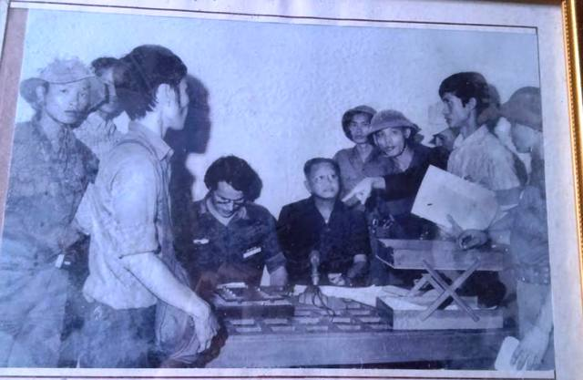
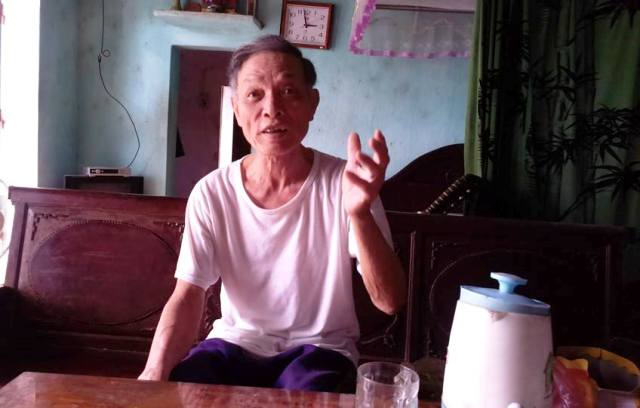

Chỉ vào bức ảnh tư liệu quý giá đã ngả màu theo thời gian được một nhà báo Pháp chụp lại vào trưa 30/4/1975, tại Đài Phát thanh Sài Gòn, chứng kiến thời điểm Tổng thống nội các Sài Gòn Dương Văn Minh đọc tuyên bố đầu hàng vô điều kiện, ông Trần Viết Cả (SN 1950, thôn Hợp Linh, xã Quảng Hợp, Quảng Xương- Thanh Hóa) đọc rõ tên những người đồng đội cùng có mặt trong bức ảnh. Ngoài Đại úy Phạm Xuân Thệ là các chiến sĩ Phùng Bá Đam, Trịnh Ngọc Ước,... Trung tá Trần Viết Cả gầy gò nhưng rắn rỏi, đứng bên trái bức hình, đầu đội chiếc mũ tai bèo, khuôn mặt đầy hân hoan, hạnh phúc.

Trung tá Trần Viết Cả nguyên là Trung đội trưởng Đội trinh sát của Trung đoàn 66, Sư đoàn 304, Quân đoàn 2. Năm 1968, Trần Viết Cả mới tròn 17 tuổi đã xung phong tham gia quân đội. Sau 3 tháng huấn luyện cơ bản, Trần Viết Cả được gia nhập Đại đội trinh sát, Sư đoàn 304 và tham gia vào mặt trận B5. Đây là mặt trận Trị Thiên - Huế, có vị trí chiến lược quan trọng, tiếp giáp khu vực Vĩnh Linh, có đường chiến lược 12 (nhánh phía bắc hệ thống), đối đầu trực tiếp với Vùng chiến thuật I, Quân đoàn I của Mỹ..
